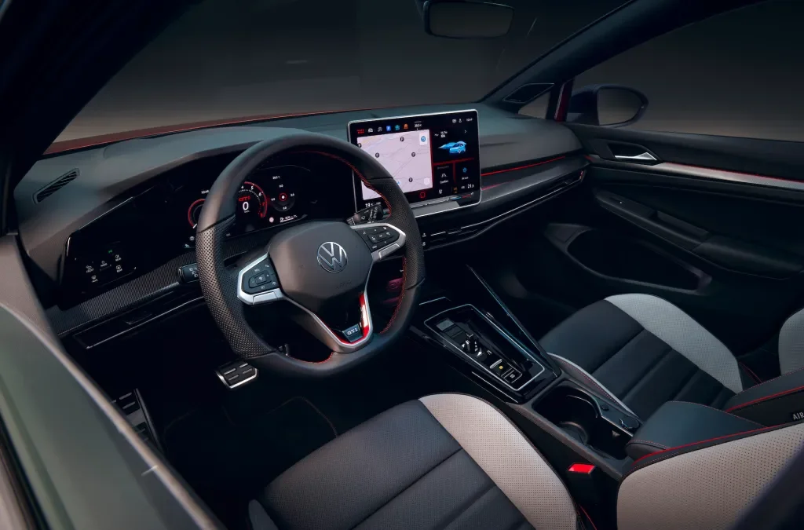

ChatGPT em carros da Volkswagen
A Volkswagen anunciou a integração de um assistente virtual alimentado por IA, o ChatGPT, em seus modelos com o assistente de voz IDA. Tecnologia acaba de estrear nos veículos europeus da montadora e promete inserção de assistente de voz